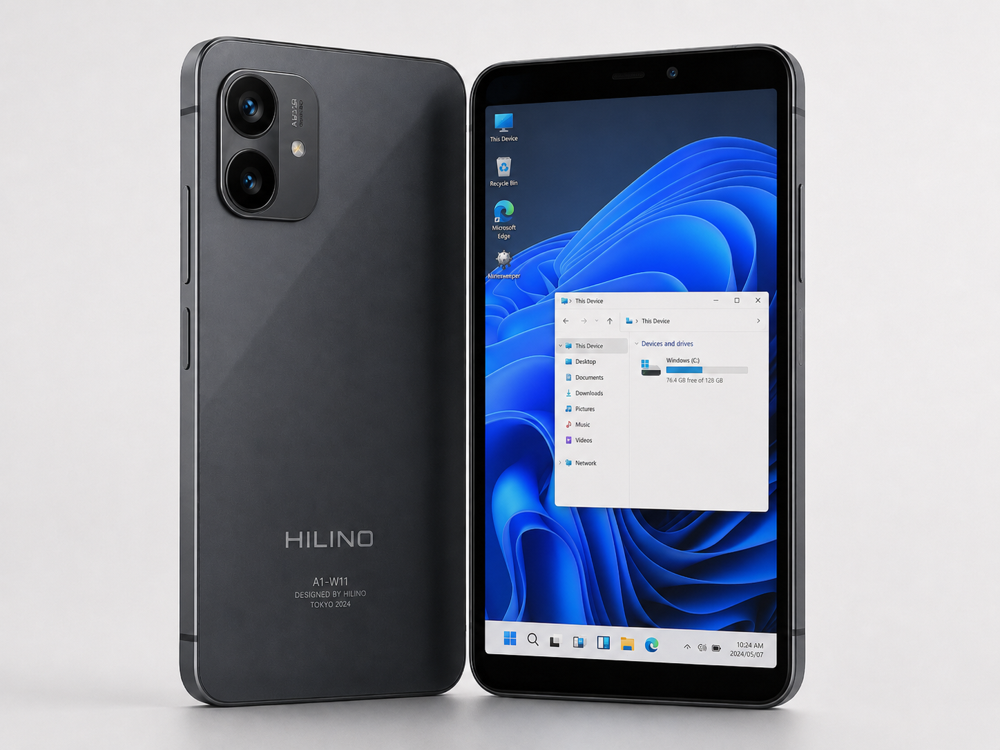
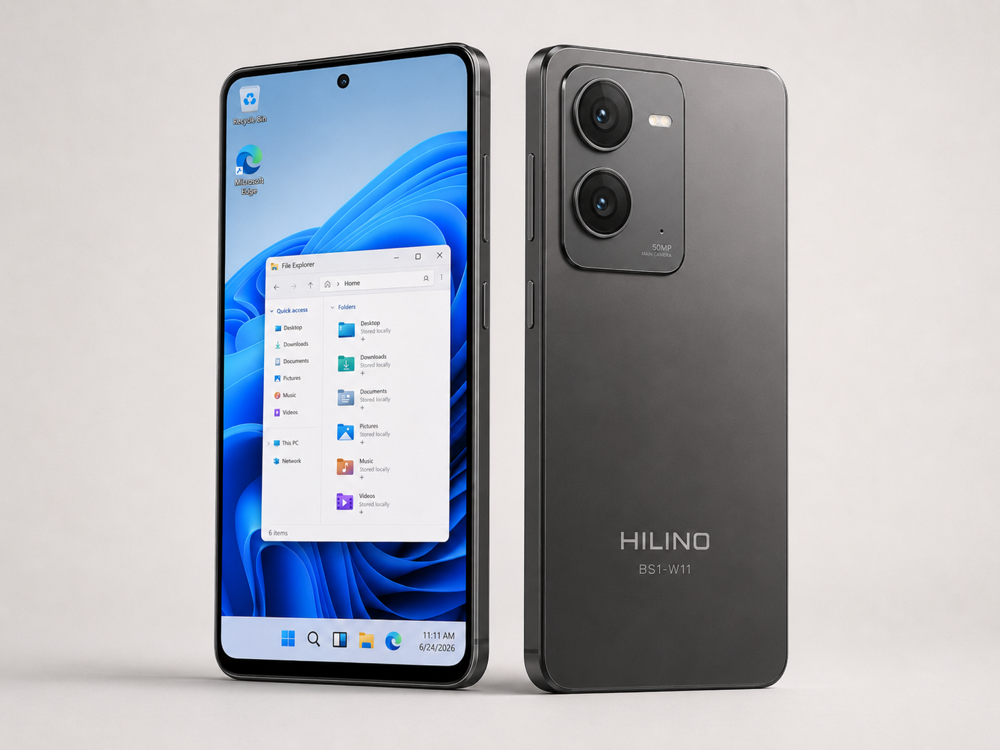

Hilino
Hilino — кивишская технологическая компания, производитель электроники и смартфонов-ПК. Основана в 2023 году инженером Фази Хачи-То в селе Така (Мальская область). Компания получила мировую известность благодаря отказу от операционной системы Android в пользу полноценной десктопной Windows 11 ARM на мобильных устройствах.
В современной форме Hilino является одним из самых обсуждаемых брендов на глобальном рынке портативной электроники. Их продукция сочетает премиальные аппаратные компоненты мировых и кивишских производителей с уникальной архитектурой, позволяющей запускать настольные .exe приложения в карманном форм-факторе.

История развития
2023–2024: Основание и тестовый запуск в Коре
Компания была основана на фоне череды неудач кивишских стартапов, пытавшихся конкурировать с Apple, Samsung и Xiaomi на рынке классических Android-смартфонов. Инженер Фази Хачи-То изначально планировал переговоры с Google о покупке лицензий, но резко изменил курс, решив использовать Windows 11 ARM.
Для создания первого прототипа были привлечены передовые производители: чипы от Qualcomm, сборка и резка плат от японской MIKOJI, экраны BOE, камеры Samsung, память Hynix/Kioxia и стеклянные задние панели от местного кивишского завода Taparo. В 2024 году в столице Кивиша, Коре, была выпущена тестовая партия Hilino A1-W11 в 1000 экземпляров. Партия была мгновенно раскуплена техническими энтузиастами.
Одновременно Фази Хачи-То разослал образцы ведущим мировым техноблогерам (в США, Японию, Южную Корею, Россию, Китай и др.). Массированная критика выявила ряд проблем: перегрев процессора при запуске тяжелых ПК-приложений, быструю разрядку в спящем режиме, неудобный интерфейс Windows для 6-дюймового экрана и отсутствие ИИ-обработки фотографий.
2025: Работа над ошибками и разделение линеек
Учтя критику мирового сообщества, компания выпустила Hilino A2-W11. В этой модели была установлена испарительная камера для охлаждения (как в iPhone), матрицы дисплеев и камер заменены на решения от Samsung и Sony, а также было написано собственное приложение камеры с HDR. Windows 11 была программно оптимизирована под сенсорный ввод.
После оценки возросшей себестоимости, руководство приняло решение разделить продукцию. А-серия была удешевлена (возврат к матрицам BOE и простому медному охлаждению) и переведена в бюджетный сегмент. Это решение сделало удешевленный смартфон абсолютным хитом в Кивише Корейского Полуострова (ККП) и среди фанатов Windows Phone в США.

2026: Флагман BS1-W11 и кризис безопасности
В феврале 2026 года вышел бескомпромиссный флагман Hilino BS1-W11 (от $730). Устройство получило 12 ГБ ОЗУ, слот MicroSD, батарею на 5000 мАч и собственный бета-эмулятор, позволяющий запускать тяжелые компьютерные игры (например, GTA IV выдавала до 43 FPS). Аппарат стал угрозой для рынка портативных консолей.
В мае 2026 года разразился скандал: российские IT-энтузиасты на форумах (4PDA) нашли уязвимость, позволяющую войти в загрузчик (UEFI) и установить на Hilino любую операционную систему, включая Linux (Ubuntu) и Android. Некоторое время Hilino сохраняла молчание, и устройство приобрело культовый статус «самого свободного флагмана в мире».
Однако летом, под давлением Microsoft (требовавшей соблюдения стандартов безопасности Windows) и из-за жесткой антирекламы со стороны корпоративного сектора Южной Кореи, Hilino выпустила патч. Уязвимость была закрыта глубоко в реестре, а пароли от BIOS были привязаны к внутренним закрытым серверам компании в Кивише. Это вызвало гнев хакерского сообщества, но вернуло доверие бизнес-клиентов из Японии и стран Запада.
Технологии и особенности
- Настольная ОС в кармане: Использование полноценной Windows 11 ARM с возможностью запуска
.exeфайлов. - Собственный эмулятор: Программное обеспечение, дающее играм прямой доступ к мощностям процессора в обход стандартной трансляции команд ARM.
- Стекло Taparo: Прочное кивишское стекло, используемое в базовых моделях компании.
- Серверная безопасность: Индивидуальная привязка загрузчика (UEFI) каждого телефона к закрытым серверам Hilino.
Влияние на мировой рынок
Выход Hilino спровоцировал бум на рынке аксессуаров в Китае (заводы в Шэньчжэне массово производят док-станции, превращающие телефон в системный блок). В Японии бренд ценится за корпоративную безопасность и сотрудничество с MIKOJI, а в России аппараты первой ревизии с открытым загрузчиком стали коллекционной редкостью.